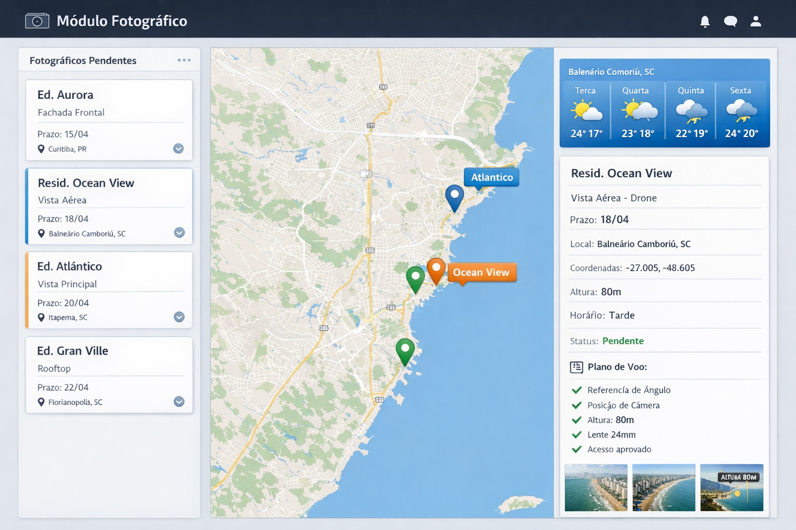

Módulo Fotográfico — Sistema Improov
Objetivo
O Módulo Fotográfico centraliza e organiza todas as demandas de captação
fotográfica necessárias para a produção das imagens dos projetos. Ele
garante que o Background fotográfico (BG) — insumo crítico para a produção
— seja planejado, capturado e vinculado corretamente às imagens.
Permite:
- visualizar fotográficos pendentes
- planejar sessões fotográficas
- organizar logística de captação
- registrar fotos capturadas
- vincular fotos às imagens que irão utilizá-las como BG
Conceito Geral
Fluxo conceitual:
Imagem precisa de BG → Pendência Fotográfica → Planejamento da Sessão →
Sessão Fotográfica → Fotos Capturadas → Vinculação foto → imagem
Interface do Módulo
A interface principal é composta por três áreas horizontais:
-
Projetos pendentes (lista de cards) — exibe todas as
pendências fotográficas. Cada card mostra:
- Nome do projeto
- Nome da imagem
- Tipo de imagem
- Prazo
- Cidade / Localização
Exemplo de card:
- Ed. Aurora — Fachada frontal — Prazo: 15/04 — Curitiba, PR
Interação: ao clicar em um card, o projeto é destacado no mapa e o
painel direito mostra os detalhes.
-
Mapa de Localização — exibe pins para cada projeto
com pendência fotográfica.
- Pin por projeto
- Agrupamento de projetos próximos
- Clique no pin seleciona o projeto e abre detalhes
-
Objetivo: facilitar agrupamento logístico e planejamento de rotas
-
Painel do Projeto Selecionado — mostra detalhes
completos do projeto e previsões úteis.
- Previsão do tempo (condição, temperatura, próximos dias)
-
Informações do projeto: nome, imagem, tipo, prazo, cidade,
coordenadas
-
Informações técnicas: altura da câmera, horário, tipo de captação
(drone, terrestre), status
-
Plano de Voo / Captação: referências, posição de câmera, altura,
lente, acesso, observações
- Imagens de referência (miniaturas)
Sessão Fotográfica
-
Sessões podem agrupar vários projetos para otimizar deslocamentos.
-
Registro de sessão: data, fotógrafo, link para drive, número de fotos
capturadas, fotos selecionadas e observações.
Exemplo:
- Sessão: 12/04 — Fotógrafo: João
- Projetos: Ed. Aurora, Resid. Ocean View, Ed. Atlântico
-
Link Drive:
https://drive.google.com/xxxxx
- Fotos capturadas: 45 — Fotos selecionadas: 6
Curadoria Fotográfica
- Seleção de fotos utilizáveis
- Identificação de fotos que servem como BG
- Vinculação das fotos às imagens do projeto
Exemplo de vinculação:
-
Foto
BG_012 → pode ser usada em: Fachada frontal, Fachada
esquina (sim); Rooftop (não)
Estrutura Conceitual (Entidades Principais)
- Projeto
- Imagem
- PendênciaFotográfica
- SessãoFotográfica
- FotoBG
Relacionamento resumido: Projeto → Imagem → PendênciaFotográfica →
SessãoFotográfica → Fotos Capturadas → Vinculação foto → imagem
Benefícios
- Centralização das demandas de fotografia
- Planejamento logístico eficiente
- Redução de atrasos no pipeline
- Rastreabilidade entre foto e imagem
- Reutilização de BGs
Possíveis Evoluções Futuras
-
Integração com APIs de previsão do tempo (OpenWeather, WeatherAPI)
- Planejamento automático de rotas e agrupamento de projetos
-
Integração com drones para registro automático de altura, direção e
coordenadas
- Banco de BGs: biblioteca reutilizável de fundos fotográficos
Visual (Exemplo simplificado)
Observação Importante
O módulo foca na dependência entre imagens e BGs fotográficos: sua função
principal é garantir que o insumo fotográfico esteja disponível e
vinculado corretamente no pipeline de produção.
Arquivo gerado automaticamente por auxílio de documentação interna.
